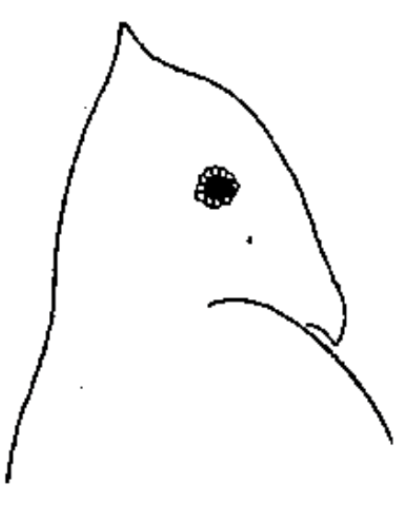
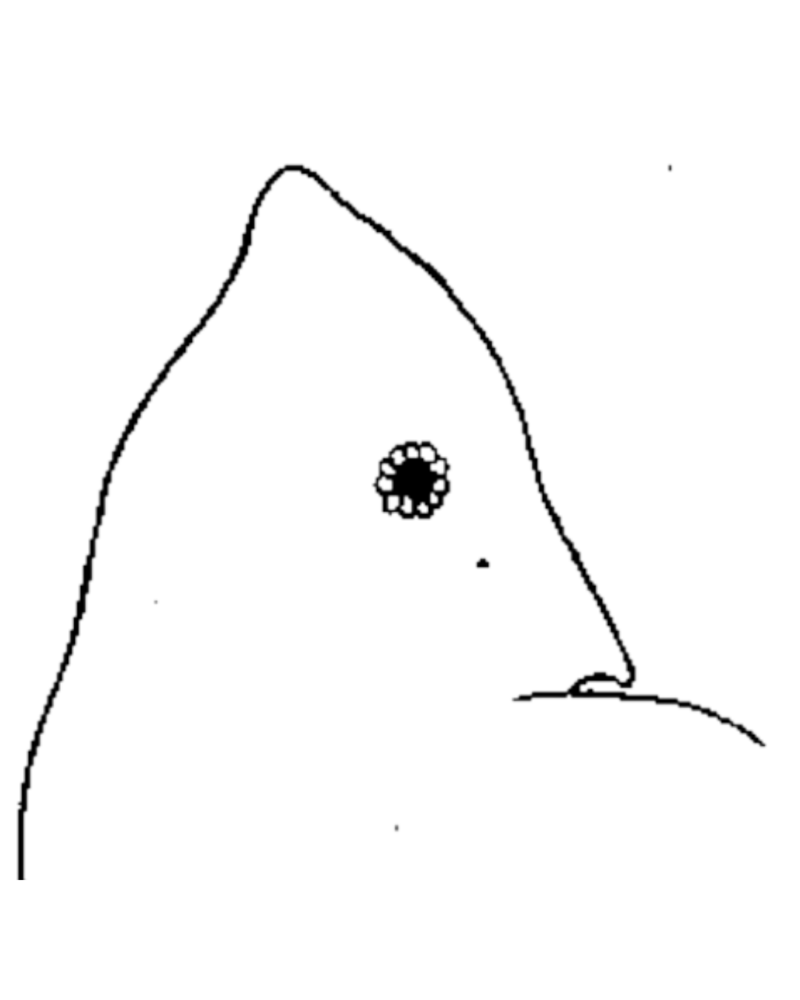
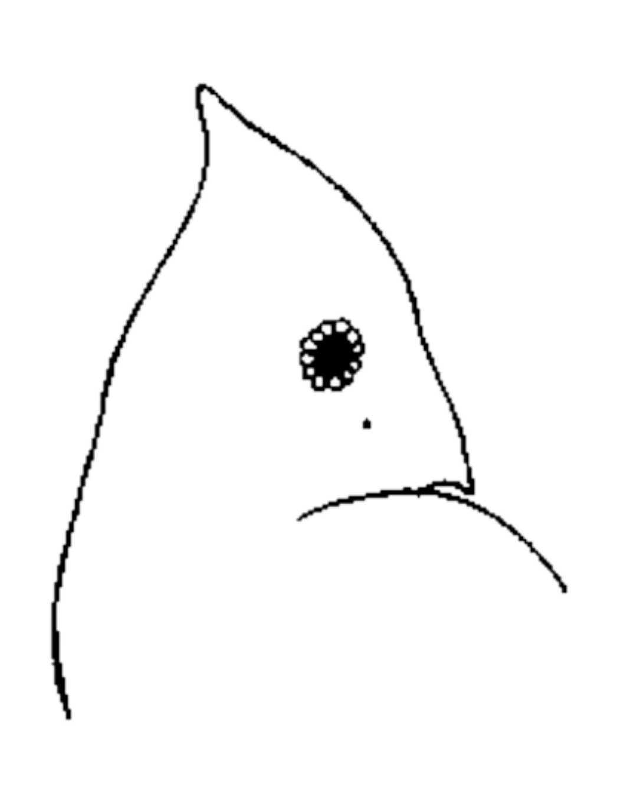
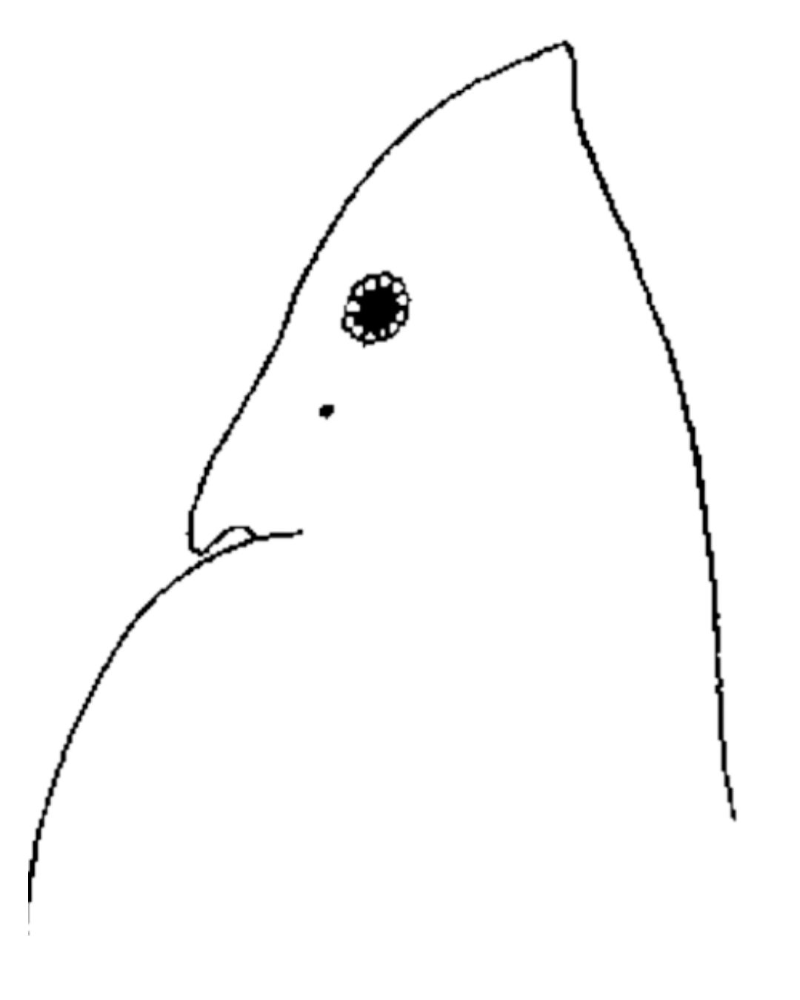
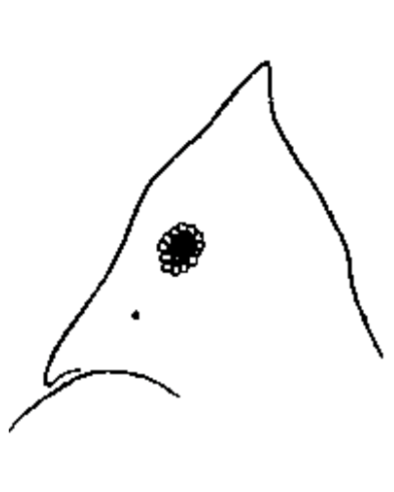
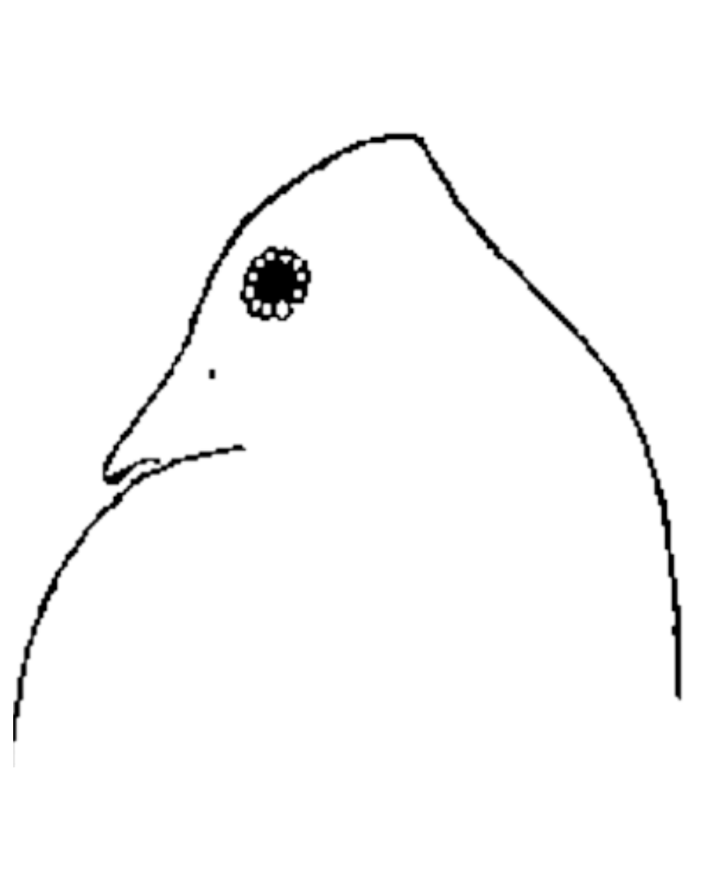

Zooplankton Diel Vertical Migration
Each night Daphnia rise toward the surface to feed, and each morning they sink to hide from fish in the dark. These drawings run a dynamic fitness model of that daily migration for Trout Lake, Wisconsin.
Each night Daphnia rise toward the surface to feed, and each morning they sink to hide from fish in the dark. These drawings run a dynamic fitness model of that daily migration for Trout Lake, Wisconsin.





